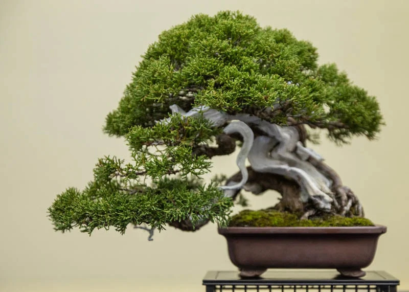

Welcome to Bonsai Gallery
Given the proper care they can live for hundreds of years being passed on from generation to generation.
This research aims to help people, who don’t know the varieties of bonsai trees, this research also gives ideas to those people who are new to or who don’t know how to plant bonsai trees in their house gardens.


Juniper Bonsai
Juniperus is a vast genus of evergreen coniferous trees and shrubs used as bonsai trees. All juniper species can be grown as bonsai with success.
Chinese Juniper
It's a little bonsai that can endure the effects of climate change. They prefer to be completely exposed to the sun and require well-drained soil to thrive...